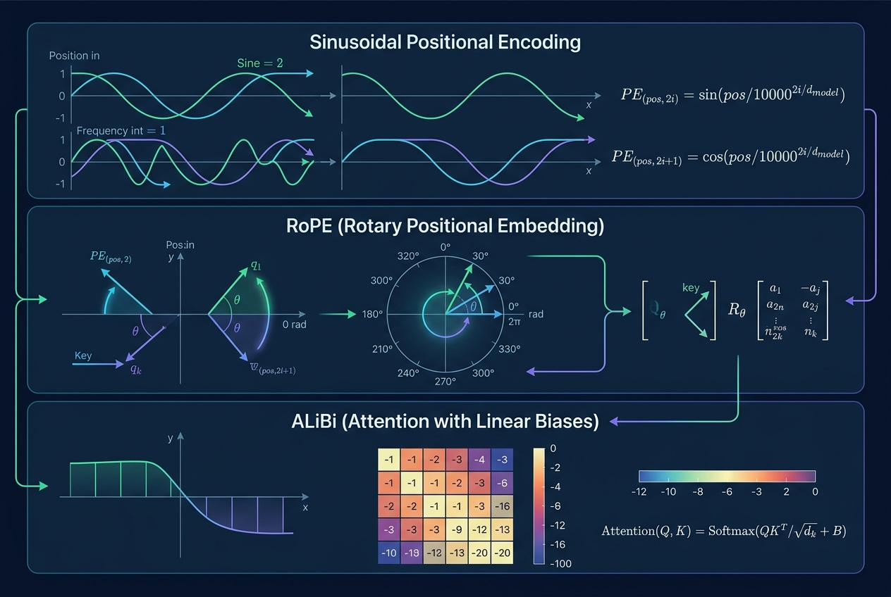

Positional Encoding, Compared: Sinusoidal vs. RoPE vs. ALiBi
Data Science
Artificial Intelligence
LLM
Transformer
Positional Encoding
Self-attention is permutation-invariant, so every Transformer smuggles order back in through a positional encoding. This post derives the sinusoidal scheme, RoPE, and ALiBi from what each is trying to guarantee, implements the three with runnable NumPy code, and visualizes how they shape attention scores — including what happens when a model is asked to run at a sequence length it never saw during training.
Author
Prof. Shin
Published
July 16, 2026

[Concept Visualization] A diagram summarizing the key concepts of this post.
[Concept Visualization] A diagram summarizing the key concepts of this post.
Why attention needs a hint about order
The scaled dot-product attention used in Transformers is a set operation. Given queries \(Q\), keys \(K\), values \(V\) with shapes \((n, d_k), (n, d_k), (n, d_v)\), the output
is permutation-equivariant: reorder the tokens along the sequence axis and the output is reordered the same way. Nothing inside the operation looks at where a token sits in the sequence. For anything more structured than a bag of words — natural language, time series, code — some signal about order has to be injected before or inside attention. That injection is the job of the positional encoding (PE).
Three schemes dominate current Transformers, and they make sharply different choices about what to encode: sinusoidal PE from Vaswani et al. (2017) encodes absolute position by adding a fixed pattern to the token embedding; Rotary Position Embedding (RoPE) from Su et al. (2024) encodes relative position by rotating query and key vectors before the dot product; and Attention with Linear Biases (ALiBi) from Press et al. (2022) injects position by biasing raw attention logits according to distance. The differences matter most on two axes that matter for anyone using an LLM on long inputs: how the mechanism scales to sequence lengths not seen at training time, and how much freedom the network keeps to learn what “distance” means.
What a positional encoding must preserve
Before comparing schemes, it helps to state what the encoded position is being asked to do inside attention. In a single head, the pre-softmax logit between query at position \(m\) and key at position \(n\) is
Only the first term is content-only. The other three mix content and position, and the last is position-only. Whether the model can pick up relative structure — that positions 12 and 15 are three apart — depends on whether the last term is a function of \((m - n)\) alone. Sinusoidal PE approximately satisfies this because sines and cosines admit an angle-sum identity, but the earlier cross terms leak absolute-position information in a way that is not translation-invariant. RoPE gets rid of the additive mix entirely by rotating queries and keys, forcing the position contribution into a form where \(q_m^{\top} k_n\) depends only on \(m - n\). ALiBi throws away the attempt to make the encoding compatible with the content dot product and instead adds a per-head, distance-dependent bias directly to \(s_{m,n}\).
The three schemes therefore answer three different questions. Sinusoidal PE asks what marker should I attach to each position? RoPE asks how should I rotate the query/key basis so that their inner product carries relative position? ALiBi asks what penalty should I place on far-away tokens without touching content at all?
Sinusoidal PE, derived and drawn
The original scheme fills a \(d_\text{model}\)-dimensional vector \(p_m\) at position \(m\) with a fixed pattern:
with base = 10000 and \(k = 0, 1, \dots, d_\text{model}/2 - 1\). Each pair \((2k, 2k+1)\) of dimensions rotates at frequency \(\theta_k\), and the frequencies span roughly seven orders of magnitude across the embedding when \(d_\text{model} = 512\). Two properties fall out. First, the norm \(\lVert p_m \rVert = \sqrt{d_\text{model}/2}\) is constant, so adding \(p_m\) to a token embedding does not distort the vector’s length. Second, because \(\sin(a + b)\) and \(\cos(a + b)\) are linear in \(\sin b, \cos b\) with coefficients that depend on \(a\), there exists a linear map \(R_a\) such that \(p_{m+a} = R_a\, p_m\). That is the sense in which sinusoidal PE “encodes relative position”: the map from one position to another is fixed and learnable-free.
The following code builds the matrix and confirms the constant-norm property using \(d_\text{model} = 64, \text{max\_len} = 128\).
import numpy as npimport matplotlib.pyplot as pltdef sinusoidal_pe(max_len: int, d_model: int, base: float=10000.0) -> np.ndarray: pos = np.arange(max_len)[:, None].astype(np.float64) i = np.arange(d_model //2) inv_freq =1.0/ (base ** (2* i / d_model)) pe = np.zeros((max_len, d_model), dtype=np.float64) pe[:, 0::2] = np.sin(pos * inv_freq) pe[:, 1::2] = np.cos(pos * inv_freq)return pePE = sinusoidal_pe(max_len=128, d_model=64)print("shape:", PE.shape)print("row norms (constant):", np.round(np.linalg.norm(PE, axis=1)[:5], 4))print("PE[0] . PE[k] at k=1,2,4,8,16:", np.round([(PE[0] @ PE[k]) for k in [1, 2, 4, 8, 16]], 3))
The dot products decrease with distance but not monotonically: because the high-frequency dimensions oscillate quickly, positions that are far apart can still line up. That non-monotonicity is a real weakness for long-range tasks, because raw sinusoidal similarity does not cleanly reward “closer” over “farther.” Plotting the full matrix as a heatmap makes the frequency structure visible.
Read the figure column by column: low-index columns (left) oscillate almost uniformly across all positions — they are the high-frequency channels — while high-index columns (right) change slowly and act as coarse position counters. This multi-scale layout is what lets the fixed pattern distinguish nearby positions and still assign different values to positions hundreds of steps apart. It also makes the failure mode visible: past the trained length, the slow columns keep drifting into a region the model has never seen, so extrapolation is not free.
RoPE: rotate queries and keys instead of adding
RoPE takes the position-as-rotation intuition literally. Split the query vector \(q \in \mathbb{R}^{d_k}\) into \(d_k / 2\) two-dimensional pairs and, at position \(m\), rotate the \(k\)-th pair by angle \(m \theta_k\):
because rotations of the same pair compose additively in their angles. The attention logit depends on \((n - m)\) only, so relative position is baked into the inner product with no additive embedding and no learnable parameters. Crucially, RoPE lives inside the query and key computation — it does not touch the value vector — so it interacts with content in a multiplicative, not additive, way. This preserves the norm structure of \(q\) and \(k\) and avoids the four-way cross-term expansion that plagues additive PE.
A minimal NumPy implementation makes the operation and its guarantee visible.
def apply_rope(x: np.ndarray, base: float=10000.0) -> np.ndarray:"""x: (seq_len, d), d even. Rotate each (x_{2k}, x_{2k+1}) pair by m*theta_k.""" seq_len, d = x.shapeassert d %2==0 k = np.arange(d //2) theta = base ** (-2* k / d) # (d/2,) m = np.arange(seq_len)[:, None] # (seq, 1) ang = m * theta[None, :] # (seq, d/2) cos, sin = np.cos(ang), np.sin(ang) x_even, x_odd = x[:, 0::2], x[:, 1::2] out = np.empty_like(x) out[:, 0::2] = x_even * cos - x_odd * sin out[:, 1::2] = x_even * sin + x_odd * cosreturn out# Translation invariance: <RoPE(q,m), RoPE(k,n)> depends only on n - m.rng = np.random.default_rng(0)q = rng.standard_normal((1, 32))k = rng.standard_normal((1, 32))for m, n in [(0, 4), (10, 14), (30, 34), (100, 104)]: q_at_m = apply_rope(np.tile(q, (m +1, 1)))[m:m+1] k_at_n = apply_rope(np.tile(k, (n +1, 1)))[n:n+1]print(f"<RoPE q@{m:>3}, RoPE k@{n:>3}> = {float(q_at_m @ k_at_n.T):+.6f}")
Four different absolute-position pairs with the same relative offset \(n - m = 4\) produce the identical inner product. This is not an emergent property; it is what the construction guarantees. What varies with \(k\) (the pair index) is the rotation speed \(\theta_k\): low-index pairs rotate slowly and act as coarse counters, high-index pairs rotate quickly and act as fine counters. Visualizing \(\cos(m \theta_k)\) and \(\sin(m \theta_k)\) for the slowest and fastest pair shows the range.
The left panel completes many cycles across the visible range — that is what makes it useful for distinguishing tokens that are a few positions apart. The right panel barely turns even after 64 positions; it will differ meaningfully only for positions hundreds or thousands apart. LLM RoPE implementations sometimes rescale the base or apply position interpolation (YaRN, NTK-aware scaling; see Chen et al. (2023)) to shift these curves and extend the “distinguishable” range beyond the trained length, at the cost of compressing fine-grained resolution.
ALiBi: don’t encode position, penalize distance
ALiBi takes a different route. Leave the queries and keys untouched, compute the content dot product as usual, and then, per head, add a linear bias to the raw attention logit:
where \(m_h > 0\) is a slope specific to head \(h\). There is no positional vector, no rotation, and no learned parameter. In the original ALiBi recipe with \(H\) heads, the slopes form a geometric sequence \(m_h = (2^{-8/H})^{h+1}\) so that different heads penalize distance at different scales.
Head 0 penalizes distance at slope 0.5 (its logit drops by 0.5 for every step away), while head 7 uses a slope near 0.004 and behaves almost like an unbiased head. Because the penalty is unbounded and linear, ALiBi never gets confused about which token is “farther” — the ordering by distance is exact. Visualizing the head-0 bias matrix and the full slope schedule makes the mechanism concrete.
The bias matrix has the same triangular shape regardless of what the query and key vectors look like — it depends only on \(|m - n|\). Different heads scan the sequence at different distance scales because the geometric slope schedule spans two orders of magnitude. This is where ALiBi’s length extrapolation comes from: the mechanism is defined for arbitrary \(|m - n|\), so a model trained at length 1024 can be fed length 4096 at inference without hitting a length the encoding was never sampled from.
Attention under each scheme
The three constructions differ in what a query at some position \(m\) sees when it looks around. Simulating each with a random content vector shared across positions is not meant to reproduce a trained model’s behavior — it isolates the positional part of the score by holding content fixed. With \(d_\text{model} = 64\) and sequence length 96, the following runs a single query at \(m = 48\) against 96 keys under each scheme.
seq_len, d_model, m =96, 64, 48rng = np.random.default_rng(1)content_q = rng.standard_normal((d_model,)) / np.sqrt(d_model)content_k = rng.standard_normal((seq_len, d_model)) / np.sqrt(d_model)# sinusoidal (additive)sin_PE = sinusoidal_pe(seq_len, d_model)q_sin, K_sin = content_q + sin_PE[m], content_k + sin_PEscores_sin = K_sin @ q_sin# RoPE (multiplicative on q,k)q_rope = apply_rope(np.tile(content_q, (m +1, 1)))[m]K_rope = apply_rope(content_k)scores_rope = K_rope @ q_rope# ALiBi (bias on raw content score)raw = content_k @ content_qslope = slopes[3]bias_row =-slope * np.abs(np.arange(seq_len) - m)scores_alibi = raw + bias_rowdef softmax(x): z = x - x.max(); e = np.exp(z);return e / e.sum()attn_sin, attn_rope, attn_alibi =map(softmax, (scores_sin, scores_rope, scores_alibi))fig, ax = plt.subplots(figsize=(7, 3.6))positions_all = np.arange(seq_len)ax.plot(positions_all, attn_sin, label='sinusoidal (additive)', lw=1.6)ax.plot(positions_all, attn_rope, label='RoPE', lw=1.6)ax.plot(positions_all, attn_alibi, label='ALiBi (head 3)', lw=1.6)ax.axvline(m, color='k', ls='--', lw=0.8, alpha=0.6, label=f'query m={m}')ax.set_xlabel('key position'); ax.set_ylabel('attention weight')ax.set_title('Attention distribution over positions with random content')ax.legend(fontsize=8); ax.grid(alpha=0.3)plt.tight_layout()plt.show()print("peak — sin/rope/alibi:", int(attn_sin.argmax()),int(attn_rope.argmax()), int(attn_alibi.argmax()))print("entropy — sin/rope/alibi:", np.round([-(p * np.log(p +1e-12)).sum()for p in (attn_sin, attn_rope, attn_alibi)], 3))
Three things stand out. Sinusoidal attention spikes hard at the query position (entropy 1.25) — because \(p_m\) is added to both\(q\) and \(k\), the inner product picks up a large \(\lVert p_m \rVert^2\) term whenever \(n = m\). That is a benign quirk here (random untrained content) but the same positional-self-similarity is what a real model has to work around during training. RoPE, having no additive term, is nearly uniform (entropy 4.56): the raw content signal dominates and position acts through phase differences that partially cancel. ALiBi puts its peak near the query and decays outward regardless of content, with intermediate entropy. In a trained network these raw shapes get modulated by learned \(W_Q, W_K\), but the bias each scheme imposes is what the model has to counteract or exploit.
Length extrapolation: the failure that separates them
The visible practical difference between the three shows up when the model is asked to attend over sequences longer than it saw during training. Plotting the raw attention logit as a function of relative distance for a fixed content pair, at two sequence lengths (128 and 384), traces each scheme past its comfort zone.
At the trained length (128), all three produce structured curves peaked near the query. At length 384 the picture changes: the sinusoidal curve develops higher-amplitude oscillations at large distances because the fixed angular pattern is being evaluated at \(m \theta_k\) values well outside the range the model was implicitly calibrated to during training. RoPE keeps its oscillatory structure but with a similar caveat — pairs with fast rotation have completed many extra full cycles, so any attention head that relied on a specific phase relationship is now confused. ALiBi is the cleanest: its linear penalty is defined for every distance, and the further out you go, the more strongly a head suppresses those positions. This monotonic behavior at unseen lengths is the reason ALiBi was proposed as a length-extrapolation technique in the first place (Press et al. 2022), though subsequent work has shown that whether extrapolation is usable depends on the downstream task, not just on how well the logits behave in isolation (Kazemnejad et al. 2023).
Choosing between the three
A short comparison table captures the axes that actually matter when you have to pick one.
aspect
Sinusoidal (additive)
RoPE
ALiBi
where it acts
added to token embedding
multiplies q, k inside attention
added to attention logits
encodes
absolute + relative (approximate)
strictly relative
pure distance penalty
learned parameters
0
0
0 (slopes fixed by rule)
interacts with content
via cross terms after \(W_Q, W_K\)
via preserved inner products
not at all
length extrapolation
poor beyond trained length
needs interpolation for large gains
strong by construction
adopted in
original Transformer, T5 variants
LLaMA, Mistral, Qwen, Gemma
BLOOM, MPT, some long-context lines
The pattern that has emerged in practice: sinusoidal PE is a serviceable default for fixed-length problems where the trained range is enough, and its mathematical transparency makes it a good teaching object. RoPE has become the de facto choice in open-source LLMs because it preserves relative structure cleanly and is compatible with a large ecosystem of context-length extension tricks (position interpolation, YaRN, dynamic-NTK scaling). ALiBi trades expressive flexibility for the cleanest length-extrapolation profile and is preferred when the deployment context guarantees long inputs but no retraining budget. None of these is a universal winner; the choice is whether you want the model to learn position relations, to have them imposed by rotation, or to have them imposed by distance penalty.
Limits and open questions
Two limits are worth naming. First, the fact that RoPE and ALiBi are strictly relative can hurt on tasks that genuinely depend on absolute position — index lookup, boundary detection, certain retrieval formats — where an absolute signature makes learning easier. Hybrid designs have been proposed to add back a small absolute signal, but the trade-off is not settled. Second, “length extrapolation” is a heavily contested benchmark. Papers that show ALiBi extending gracefully often measure perplexity on natural text, not task accuracy, and controlled studies have found that extrapolated attention tends to under-utilize the extra context regardless of the positional scheme (Kazemnejad et al. 2023). When a paper claims “million-token context,” the question to ask is whether the model can use those tokens, not just avoid crashing on them.
For time-series work specifically, sinusoidal-style PE remains common in Transformer-based forecasters because sequence lengths are known and fixed, and additive PE composes cleanly with input normalization schemes such as RevIN. RoPE is starting to appear in long-horizon forecasters that reuse LLM backbones. ALiBi has seen less uptake in forecasting than in language modeling, partly because forecasting benchmarks rarely stress length extrapolation the way long-context language modeling does.
Conclusion
Sinusoidal PE, RoPE, and ALiBi are not three variants of the same idea. They answer different questions about what “position” should mean inside attention, and their differences show up in the shape of the attention matrix, in the extent to which relative structure is preserved by construction, and in what happens when a model runs at unseen lengths. If you take one thing away, take the derivation of \(s_{m,n}\) as a sum of four terms in the additive case: it is the reason additive PE is delicate and the reason RoPE and ALiBi were invented. The right question at design time is not “which is best” but “which of these three constraints does my task actually need,” and the runnable code above is a starting point for answering that in your own setting.
References
Chen, Shouyuan, Sherman Wong, Liangjian Chen, and Yuandong Tian. 2023. Extending Context Window of Large Language Models via Positional Interpolation. https://arxiv.org/abs/2306.15595.
Kazemnejad, Amirhossein, Inkit Padhi, Karthikeyan Natesan Ramamurthy, Payel Das, and Siva Reddy. 2023. “The Impact of Positional Encoding on Length Generalization in Transformers.”Advances in Neural Information Processing Systems (NeurIPS).
Press, Ofir, Noah A. Smith, and Mike Lewis. 2022. “Train Short, Test Long: Attention with Linear Biases Enables Input Length Extrapolation.”International Conference on Learning Representations (ICLR).
Su, Jianlin, Murtadha Ahmed, Yu Lu, Shengfeng Pan, Wen Bo, and Yunfeng Liu. 2024. “RoFormer: Enhanced Transformer with Rotary Position Embedding.”Neurocomputing 568: 127063. https://doi.org/10.1016/j.neucom.2023.127063.
Vaswani, Ashish, Noam Shazeer, Niki Parmar, et al. 2017. “Attention Is All You Need.”Advances in Neural Information Processing Systems (NeurIPS) 30.